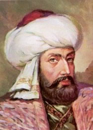
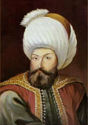
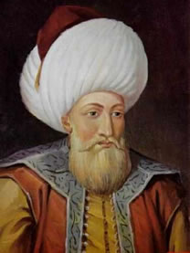
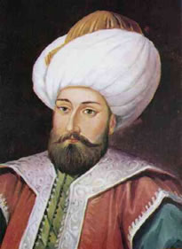

 Uç beyi olarak hüküm sürmüstür. Hükümranlik süresi Osmanogullari'nin en uzunudur. Babasi Gündüz Alp,annesi Hayme Ana (Haymana)dir.Babasinin ölümü üzerine Ertugrul Bey babasinin yerine geçti. Ailesinin bir kismi Ahlat'ta kaldi. Malazgirt Meydan Savasi'ndan sonra Kayi Boyu'nun bir kismi Ankara'nin batisindaki Karacadag yöresine yerlestirilmislerdir. Yassiçemen meydan muharebesinde Selçuklu Sultani Alaaddin Keykubat lehine yararliklar gösterdi. Selçuklu Sultani, Kayi Beyi'ne Bizans sinirinda 1000 kilometrekarelik bir topragi Bizans'a karsi siniri savunmak ve ileriye götürmek göreviyle verdi.13.asir ortalarinda Ankara'nin batisindan göç edip Sögüt ve Domaniç'i ele geçiren Ertugrul Bey idaresindeki Kayi asireti,400 çadir halkindan olusuyordu.Bugünkü Kütahya-Bursa-Bilecik illerinin sinirlarinin birlestigi bölgedeki topraklari beyligine “yurt” tuttu.Sögüt Kasabasi'nin fethinden sonra beylik merkezini Sögüt'e tasidi. Ölümünde Bizans'tan yaptigi fetihlerle topraklarini 4.800 kilometrekareye çikarmisti.
Osmanli Devleti'nin temellerini atan Ertugrul Gazi,Oguzlarin Kayi Boyu'na mensup olup Selçuklularin uç beyi degildir.Selçuklu Türkiyesi'nin Bizans sinirinin kuzey kesiminden sorumlu büyük uç beyleri olan Çobanogullari'na taabi olmustur. Ancak oglu Osman Bey 1300 yili basinda büyük uç beyi olup,artik dogrudan dogruya Selçuklu Sultani'na baglanmistir.
Oglu Osman Gazi'ye yaptigi vasiyeti ile alti asir boyunca ayakta kalacak olan bir devletin idarecilik ruhunun temellerini atmistir.Ölüm tarihi kesin olarak bilinmeyen Ertugrul Gazi'nin 90 yasindan fazla oldugu halde (1281-1288) tarihleri arasinda Sögüt'te vefat ettigi bilinmektedir. Türbesi Bilecik ili sinirlari içerisinde olan Sögüt Ilçesi'ndedir.
Sögüt ilçesi'nde her yil Ertugrul Gazi'yi anma törenleri yapilmaktadir.Orhan Saik Gökyay'in tesbitine göre Dede Korkut kitabinin önsözünde su kayit yer almaktadir:
“Korkut ata ayitti,ahir zamanda hanlik gerü Kayi'ya dege, kimesne ellerinden almaya,ahir zaman olup kiyamet kopunca. Bu dedügü Osman neslidür, isde sürilü gideyorur.”
 Osman Gazi, Ertugrul Bey'in üç oglundan birisidir. Osman Bey diger kardeslerinden büyük degildi, fakat adeta bir idareci olarak yaratilmisti. Zira bu hususta çok büyük kaabiliyet sahibi idi. Babasi vefat ettikten sonra diger bütün beyler, ittifakla Osman Bey'i asiretin reisi olarak tanidilar.Osman Bey, beyligin bayna geçtigi zaman,23 yasinda idi. Uzun boylu, genis gögüslü, kaIin ve çatik kasli, elâ gözlü ve koç burunlu idi. Iki omuzlari arasi oldukça genis, vücudunun belden yukari kismi, asagi kismina nisbetle daha uzundu. Çehresi yuvarlak ve teni bugday renginde idi.Büyük seyhlerderi Edebali'nin evinde misafir iken, istirahat için gösterilen odada, Kur'an-i Kerim'i görünce, sabaha kadar saygisindan yatmadigi ve geceyi uykusuz geçirdigi çok meshurdur. seyh bu durumdan cok memnun kaldigi için kendisini kizi ile evlendirmis ve hayir dualar etmistir.Osman Bey, 1287'de Karacahisar'i fethetti.1280'de Domaniç'te Bizanslilari yenerek Bilecik'i fethetti ve Selçuklu Hükümdari tarafindan uç beyligine verildi. 1299'da Inegöl fethedildi.Selçuklu Devleti yikildi ve Osman Bey müstakil beyligini ilân etti. 1300'de Yenisehir ile Köprühisar, 1302'de ise Akhisar ve Koçhisar fethedildi.Osman Bey'e babasindan kalan arazinin genisligi 4800 km. kare idi. Kendisi vefat ettiginde ise, beyligin toprak genisligi 16.000 km.kareye ulasmytir.Vefat etmeden önce oglu Orhan Bey'e söyle vasiyet etmistir :ogullarima ve bütün dostlarima birinci vasiyetim Sudur ki; her zaman gazaya devam ederek, Din-i Celil-i Islâm'in yüceligini yasatiniz.
Cihadin kemâline ererek, sancagi serifi hep yüksekte tutunuz. Her zaman Islâm'a hizmet ediniz. Zira Cenâb-i Hak benim gibi zayif bir kulunu ülkeler fethetmek için memur etti. Gaza ve cihadlarinizla Kelime-i Tevhid'i çok uzaklara götürünüz. Hanedanimdan her kim, hak yoldan ve adaletten saparsa mahser gününde, Rasülü Azam'in sefâatinden mahrum kalsin. Oglum! Dünyaya gelen hiç bir insan yoktur ki, ölüme boyun egmesin. Bana da, Hz.Allah'in emri ile simdi ölüm yaklasti. Bu devleti sana emanet ediyorum. Seni de Mevlâ'ya emanet ettim. Her isinde adaleti üstün tut.Vefatinda 68 yasinda idi. Tarih ise, Agustos 1326'yi gösteriyordu. (Allah rahmet eylesin.) Vefat ettiginde geriye biraktigi mal varligi sunlardi : Bir at mrhi, bir çift çizme, birkaç tane sancak, bir kiliç, bir mizrak, bir tirkes,birkaç at, üç sürü koyun, tuzluk ve kasiklik.Osman bey vefat ettigi zaman zayif bir rivayete göre, Sögüt'te babasmn yamna defnedilmis ve Bursa alinirsa oraya defnini vasiyet etmisti. Bupun için 1326'da Bursa alindiktan sonra vasiyeti yerine getirilerek cesedi Bursa'ya nakledilip, Hisar'da (Saint Eli) namina yapilmis olan Gümüslü Künbed'e defnedilmistir. Fakat vekayün tetkikine göre vefatW in 1326'da Bursa'nin teslim alinmasindan sonra oldugu anlasiliyor.
Osman Bey zamaninda yasayan Islâm büyükleri :Silsile-i Sâdât-i Naksibendiyye'nin onuncu ve onbirinci halkalarini teskil eden, Hâce, Arif Rivgiri ve Hâce Mahmud Incir Fagnevi (k.s.)Hazretleri, seyh Saadettin Cibavi, Bahaüddin Veled ve müellif Pehlivan Mahmud Poyraz.
 Osmanli Devletini Osman Gazi kurmustu.Fakat onu teskilâtlandiran ve büyük bir devlet haline getiren Orhan Gazi idi.Orhan Gazi sari sakalli, uzunca boylu, mavi gözlü idi. Yumusak huylu ve merhametli, fakat yerine göre hiddetli ve secaatliydi. Fakirleri sever ve ulemaya hürmet ederdi. Son derece dindar, adaletli ve tebaasina kendisini sevdirmesini çok iyi bilirdi. Bizzat halk içine girer, onlarla yemek yer ve dertlesirdi.Hareketlerinde çok hesapli davranir ve hiç telâs etmezdi. Iznik'i fethettigi zaman hiristiyanlara göstermis oldugu insanca muamele,dillere destan olmustu.Orhan Gazi'nin her yönden büyük bir insan oldugunu sadece Türkler degil, barçok yabanci tarihçiler dahi tasdik etmislerdir.Orhan Gazi daha 15 yaynda iken harplere istirak etmis ve hayatinin büyük bir kismi harp meydanlarinda geçmistir. Babasindan 'i6.000 km. kare olarak teslim aldigi topraklari alti misline çikararak 95.000 km. kare yapmistir.Orhan Gazi bir devlet reisi sifati ile harplerde bizzat ordularinin basinda daima bulunmustur. Orhan Gazi devletin muntazam bir idare sistemine baglanmasi lüzumunu görmüs ve teskilât isini ise, Alâeddin Pasa ile, Seyh Edebali'nin bacanagi Çandarli Kara Halil Pasa'ya havale etmisti.Orhan Gazi zamaninda teskilâti üç noktada toplayabiliriz : Para, kiyafet, ordu.Orhan Bey'in büyük oglu Süleyman Pasa,kendisinden önce vefat etmistir. Kendi sagliginda iken baskumandanlik vazifesini ikinci oglu Murad Hüdavendigâr'a devretmistir.Osmanlilar tarafindan yaptirilan ilk cami (1333 - 1334) senesinde Iznik'te yapilan "Haci Özbek" Camiidir. Ve Orhan Gazi yaptirmi,stir.Bursa Medresesini Orhan Bey yaptirmis ve ilk "Sultan" lâkabi da O'nun zamaninda kullanilmistir. Yine ilk Osmanli parasi da Orhan Bey zamaninda basilmistir. Müslüman Türkler Avrupa'ya ilk defa Orhan Bey zamaninda geçmislerdir. Istanbul'un Anadolu yakasi tamamen Orhan Bey zamaninda Osmanli topraklarina katilmistir.
Yeni fethedilen hiristiyan topraklarinda yasayan yerli hiristiyan halktan Osmanli hayranligi, yeni fetihleri de kolaylastirmistir.Zamaninda fethedilen yerler :1326'da Bursa, 1329'da Iznik, 1337'de Gemlik'i fethetti ve Bizanslilara kary Palekanon(Maltepe) zaferini kazandi. 1345'de Karasi Beyligi ilhak edildi. 1354'de Ankara ve Gelibolu feihedildi.Orhan Gazi 1360 senesinde 79 yasinda vefat etmistir. Türbesi ise Bursa'da Osman Gazi'nin türbesi yanindadir. Türbe dört köselidir.Içinde 4 tane büyük mermer sütun vardir. Türbe bu dört sütun üzerine oturtulmustur. Kubbesi genis ve kursunla örtülmüstür. Duvarlari sade ve beyaza boyanmistir. Tavaninda onar kandilli birer tane avize asilidir. Orta yerde Orhan Gazi'nin sandukasi bulunmaktadir. Etrafi;pirinç parmakliklar ile çevrilmistir. Sandukanin kuzey yönünde Cem Sultan'in oglu Abdullah,kapi tarafinda Ikinci Bayezid'in oglu Korkut,onun yaninda Orhan Gazi'nin ailesi Nilüfer Hatun ve oglu Kasim Çelebi ile Yildirim'in oglu Musa Çelebi vardir. Bu türbede yirmiiki tane mezar bulunmaktadir. Türbeyi ise Sultan Abdülaziz yaptirmistir.Silsile-i Sâdât-i Naksibendiyye'den Hâce Muhammed Bâbâ Semâsi (k.s.) Hazretleri, Seyh Edebali, Haci Bektas-i Veli bu devrin büyüklerinden olup, Orhan Gazi zamaninda vefat etmislerdir.
 Sultan Murad uzun boylu, degirmi yüzlü,iri burunlu idi. Kalin ve adaleli bir vücuda sahipti.Basina mevlevi sikkesi üzerine yuvarlak testar sarili bir baslik giyerdi. Çok sade giyinir ve kirmizi zeminli beyaz elbiseden hoslanirdi. Gayet nazik, sevimli, çok halim ve selimdi. Âlim ve sanatkârlara hürmet gösterir, fakirlere ve kimsesizlere büyük bir sefkatle muamele ederdi.Halk tarafindan "Gazi Hünkâr" diye anilir ve bir baba olarak sevilirdi.Terbiyesi ile annesi Nilüfer Hatun mesgul oldu: Gençligini Bursa'da medreselerde, ilim ve sarfat adamlari ile geçirdi. Bütün hayati sinir boylarinda ve harp meydanlarinda geçmistir. Hiç durmadan Rumeli'den Ana'dolu'ya, Anadolu'dan Rumeli'ye seferler yapmistir. Bu kadar harp mesguliyetleri arasinda, büyük ve kiymetli binalar, sanat eserleri meydana getirmeye de vakit bulmustur. Bursa'da camiler, medreseler ve imarethaneler yaptirmistir. Edirne'yi ilk defa O, hükümet merkezi yapmistir. Ilk Edirne sarayi da kendisi bina ettirmistir.
Orhan Gazi'nin vefatinda 95.000 km. Kare olan topraklarin genisligini 500.000 km. Kareye çikardi.Zamaninda alinan yerler :1362'de Edirne, 1363'de eski Zagra ve Filibe fethedildi. 1364'de Sirpsindigi zaferi kazanildi ve Haçlilar perisan edildi. 1365'de Kara Biga Osmanli topraklarina katildi. 1369'da Hayrabolu, Kirklareli, Pinarhisar ve Vize alindi.1370'de Bulgar Kralligi Osmanlilara tâbi oldu.Bir müddet sonra da Çamurlu savay kazanildi. 1371'de Çirmen zaferi elde edildi, Haçlilar bir defa daha yenildiler. 1372'de Çatalca Bizans'tan alindi. 1374'de Sirbistan Osmanlilara tâbi oldu. 1375'de Nis fethedildi. 1378'de Kütahya Vilâyeti Osmanli topraklarina katildi.1382'de , Sofya fethedildi. 1383'de Candarogullari Osmanlilara tâbi oldu. 1385'de Arnavutlukun kuzeyi tamamen alindi,. 1386'da Karamanlilarla harp yapildi., 1388'de Silistre, Zistovi, Nigbolu, Plevne, Lofça, Deliorman ve Dobruca Türk hakimiyeti altina alindi. 1389'da Haçlilar bir defa daha perisan edildiler ve Islâm ordusunun yigitlikeri sonunda Kosova Meydan Muharebesi kazanildi. Ne yazik ki bu sanli zafer çok büyük bir aci ile neticelendi. Bütün gazileri derin bir matem içinde birakti. Söyle ki;bu zafer sonunda yaralilarin büyük bir kismi düsman askerleri idi. Yerdekiler arasinda tek türk Türk sehidi de vardi. Sultan Murad her sehidin önüne geldigi vakit büyük bir üzüntü ile "Inna lillâhi ve inna ileyhi râciün" diyor ve sehidin derhal kaldirilarak defnedilmesini emrediyordu. Yarali bir Türk'ün yanina geldigi zaman, onu oksuyor, yarasinin aciyip acimadigini ve bir arzusu olup olmadigini soruyordu.Böylece dolasirken biraz uzakta ölüler arasinda bir kimildama oldu. Sultan Murad o tarafa döndü. Ölüler arasindan, dev gibi uzun boylu bir Sirplinin kalktigi görüldü. Milos ismindeki bu Sirpli (Kral Lazar'in damadi) yerden kalkarak Padisaha dogru gelmeye basladi. Padisahin muhafizlari ise, Sirpli'yi derhal yakaladilar.Fakat Sirpli, padisahi mutlaka görmek istiyordu ve : "Beni birakiniz, korkmaniza lüzum yok.Ben Padisahin elini öpmeye ve hem de müslüman olmaya geldim. Ayrica size bir de müjdem var. Kral Lazar yakalandi, bakiniz getiriyorlar" dedi. Padisah onun sözlerini isitmisti.Isaret ederek birakmalarini söyledi. Muhafizlar da Kralin tutuldugu tarafa bakarlarken, yarali taklidi yapan hain Sirpli, Padisaha yaklasti, elini öpecekmis gibi egildi, bir anda ve yildirim sürati ile koltugunun altinda sakladigi hançerini çekerek, Gazi Hünkâr'in mübarek gögüs ve karnina sapladi. Muhafizlar neye ugradiklarini anlayamadilar. Katil kaçmaya basladi. Sonra muhafizlar kafiri yakalayarak parça parça ettiler.Hünkâr'in son sözleri sunlardi :
"Islâmin muzafferiyeti, benim sehit olmama bagli ise,sehadet serbetini nasip buyurmasini Cenab-i Hak'tan dua ve niyaz etmistim. Duam kabul buyuruldu. Hazreti Allah'a hamd ve sena olsun ki, Islâm askerinin zaferini gördükten sonra hayatim sona ermektedir. Oglum Bayazid'e biat ediniz. Sakin esirleri incitmeyiniz. Mal ve canlarina tecavüz etmeyiniz. Ben artik sizleri ve muzaffer ordumuzu Cenab-i Hakk'a emanet ediyorum. Mevla devletimizi bütün fenaliklardan korusun!"
Sultan Murad'in hançerle parçalanan barsaklari, sehit oldugu yere bir türbe yapilarak gömüldü. ,Cesedi ise Bursa'ya nakledilerek Çekirge'deki türbesine defnedildi.Silsile-i Sadât-i Naksibendiyye'den Hâce Seyyid Emir Kilâl (k.s.) Hazretleri, Mugnullebib isimli eserin sahibi ve topun mucidi olarak bilinen Cemaleddin Abdullah Efendi, Buhari'nin sârihi Semseddin Kirmani, Birinci Murad zamaninda vefat etmislerdir.Ilk kazasker tayinleri, timar kanunu ve minarelerden salatu selâm okuma adetleri bu devirde baslamistir.